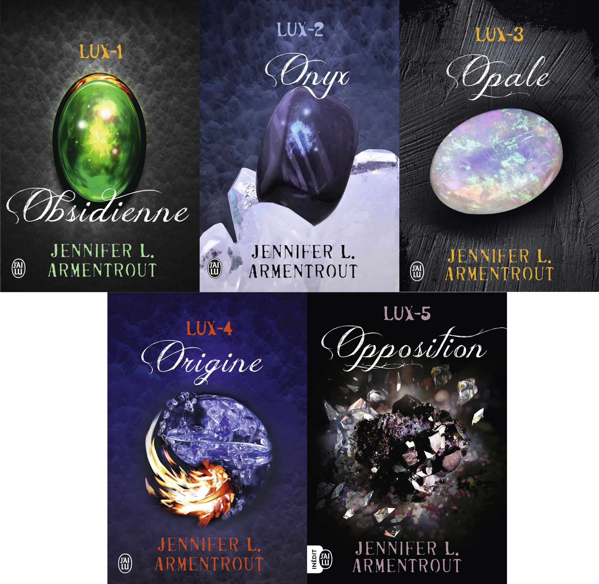

1. Six of Crows — Leigh Bardugo
Fantasy • Casse • Personnages complexes • ⭐⭐⭐⭐⭐

Mon avis
Six of Crows est l’un des romans qui m’a le plus marquée. J’ai adoré son univers sombre, ses personnages très travaillés et son intrigue pleine de tension. Chaque membre de l’équipe possède ses propres blessures, ses secrets et ses motivations, ce qui rend le groupe très attachant. Kaz Brekker est un personnage particulièrement fascinant : mystérieux, intelligent, dangereux, mais aussi profondément marqué par son passé. Malgré la complexité de l’univers, le récit reste captivant du début à la fin.
Résumé
Dans les bas-fonds de Ketterdam, Kaz Brekker, jeune criminel redouté, reçoit une mission presque impossible : infiltrer le Palais de Glace afin de libérer un prisonnier très important. Pour réussir, il réunit une équipe de six personnes aux talents aussi différents que dangereux. Entre trahisons, secrets et risques mortels, leur mission pourrait changer l’équilibre du monde.
2. Plein Ciel — Siècle Vaëlban
Fantasy • Opéra • Intrigues • ⭐⭐⭐⭐⭐

Mon avis
Plein Ciel est un roman très original, poétique et complexe. Ce que j’ai aimé, c’est son ambiance particulière et son univers très travaillé. L’histoire demande parfois plus de réflexion que d’action, mais c’est justement ce qui la rend intéressante. Le roman possède une vraie profondeur et donne envie d’analyser les personnages, les règles de l’Opéra et les tensions sociales de cet univers.
Résumé
Sur l’île de la Nébuleuse, l’Opéra Plein-Ciel occupe une place centrale dans la société. Ivoire, issue d’une famille aristocratique, possède un don particulier et travaille dans un atelier de couture. Lorsque son talent est remarqué, elle est forcée de rejoindre l’Opéra. Elle découvre alors un monde fascinant, mais aussi dangereux, rempli d’intrigues, de secrets et de luttes de pouvoir.
3. The Prison Healer — Lynette Noni
Fantasy • Prison • Action • Romance légère • ⭐⭐⭐⭐☆

Mon avis
The Prison Healer est un roman que j’ai trouvé très prenant. Il mélange action, suspense, émotions et une petite touche de romance. L’univers de la prison est dur, mais il rend l’histoire très immersive. J’ai aimé suivre Kiva, qui est une héroïne courageuse, intelligente et résistante. Même si je n’ai pas encore lu toute la trilogie, ce premier tome m’a vraiment donné envie de découvrir la suite.
Résumé
Kiva vit dans une prison terrible où elle soigne les détenus pour survivre. Un jour, une prisonnière très importante arrive, accompagnée d’un message mystérieux : elle ne doit pas mourir. Kiva se retrouve alors entraînée dans une série d’épreuves dangereuses qui pourraient changer son destin et révéler des secrets bien plus grands qu’elle ne l’imaginait.
4. Les Âmes vagabondes — Stephenie Meyer
Dystopie • Science-fiction • Romance • ⭐⭐⭐⭐☆

Mon avis
Les Âmes vagabondes est un roman assez ancien, mais il reste vraiment marquant. J’ai aimé le mélange entre réflexion, survie, émotions et romance. La première partie est plus lente et introspective, tandis que la deuxième devient plus intense. Le concept est original, car l’histoire ne repose pas seulement sur une invasion, mais aussi sur l’identité, les souvenirs et les émotions humaines.
Résumé
La Terre a été envahie par des âmes extraterrestres qui prennent possession des corps humains. Melanie Stryder fait partie des derniers humains libres, mais elle finit capturée. Une âme nommée Vagabonde est placée dans son corps. Pourtant, Melanie résiste encore dans son esprit, obligeant Vagabonde à découvrir ses souvenirs, ses sentiments et les personnes qu’elle aime.
5. The Book of Ivy — Amy Engel
Dystopie • Mariage arrangé • Romance • ⭐⭐⭐⭐☆

Mon avis
The Book of Ivy est une dystopie plus lente que d’autres romans du genre, mais je l’ai trouvée très agréable à lire. J’ai aimé l’évolution d’Ivy, qui commence avec une mission imposée par sa famille et finit par remettre en question tout ce qu’elle croyait savoir. La romance est douce, progressive et donne beaucoup d’humanité à l’histoire.
Résumé
Ivy Westfall vit dans une société divisée par des tensions politiques. Pour préserver l’équilibre, les jeunes filles de son camp sont mariées aux fils du camp adverse. Ivy doit épouser Bishop, le fils du président, mais sa véritable mission est de le tuer. Peu à peu, elle découvre que les choses sont plus complexes que ce qu’on lui a toujours raconté.
6. Camera Obscura — Maëlle Desard
Jeunesse • Londres • Mystère • ⭐⭐⭐⭐☆

Mon avis
Camera Obscura est un roman jeunesse à l’écriture assez simple, mais son intrigue est très efficace. J’ai aimé son ambiance sombre, son cadre londonien et le mélange entre mystère, médecine et créatures étranges. Même si le style est moins complexe que d’autres livres de ce classement, l’histoire reste originale et pleine de rebondissements.
Résumé
À Londres, au XIXe siècle, une brume inquiétante recouvre la ville depuis la Grande Puanteur. Des cadavres commencent à se relever et sont appelés les Putréfiés. Léandre, étudiant en médecine, pense que ces créatures pourraient l’aider à sauver sa sœur malade. Pour comprendre ce mystère, il doit s’allier à Winifred, une journaliste brillante et insupportable.
7. Livi Morevi et les passeurs d’âmes — Nathalie Cirac
Jeunesse • Fantastique • Reconstruction • ⭐⭐⭐⭐☆

Mon avis
Livi Morevi et les passeurs d’âmes est une lecture douce, calme et agréable. C’est le genre de roman parfait quand on veut lire quelque chose de moins intense, mais quand même prenant. J’ai aimé l’atmosphère mystérieuse, le côté fantastique et la manière dont l’héroïne découvre peu à peu un univers plus dangereux qu’elle ne l’imaginait.
Résumé
Après la mort inexpliquée de son père, Livie déménage dans un nouvel endroit. Elle tente de reconstruire sa vie, mais son quotidien bascule lorsqu’elle rencontre des garçons étranges et découvre l’existence des passeurs d’âmes. Entre lycée, secrets et dangers surnaturels, Livie doit apprendre à vivre entre deux mondes très différents.
8. Julia et le Vicomte — Meg Cabot
Romance historique • Jeunesse • Héroïne têtue • ⭐⭐⭐⭐☆

Mon avis
Julia et le Vicomte est une romance historique douce, mais plus subtile qu’elle n’en a l’air. J’ai aimé l’ambiance du XIXe siècle, les malentendus, les secrets et l’héroïne qui apprend à regarder au-delà des apparences. Julia est parfois naïve, mais elle reste attachante grâce à son caractère fort et à sa détermination.
Résumé
À Londres, Julia Sparks rêve d’épouser Lord Sebastian Bartholomew et d’intégrer la haute société. Mais Nathaniel Sheridan commence à semer le doute dans son esprit. Peu à peu, Julia réalise que le vicomte qu’elle admire n’est peut-être pas aussi parfait qu’elle le pensait, et que ses sentiments pourraient la mener ailleurs.
9. Lux — Jennifer L. Armentrout
Fantastique • Romance • Aliens • ⭐⭐⭐⭐☆

Mon avis
Lux est une saga très addictive. L’histoire est parfois un peu simple, mais les personnages sont très attachants et la romance fonctionne vraiment bien. J’aime beaucoup la dynamique entre Katy et Daemon, entre disputes, attirance et tension. C’est une lecture agréable, parfaite quand on veut une romance fantastique efficace.
Résumé
Katy déménage dans une petite ville de Virginie-Occidentale et découvre que ses voisins, Daemon et Dee, ne sont pas des adolescents ordinaires. Daemon est arrogant et insupportable, mais Katy sent rapidement que quelque chose d’étrange entoure sa famille. En se rapprochant d’eux, elle entre dans un monde dangereux qui dépasse tout ce qu’elle imaginait.
10. La Sélection — Kiera Cass
Dystopie • Romance royale • Compétition • ⭐⭐⭐☆☆

Mon avis
La Sélection est une trilogie divertissante et très facile à lire. L’univers est intéressant, l’idée de compétition fonctionne bien et on ne s’ennuie presque jamais. Même si le triangle amoureux m’a parfois agacée et que j’ai eu un peu de mal à entrer dans l’histoire au début, la saga reste agréable et mémorable.
Résumé
Dans une société divisée en castes, trente-cinq jeunes filles sont sélectionnées pour tenter de conquérir le cœur du prince Maxon. Pour America Singer, cette compétition est un cauchemar, car elle l’oblige à quitter sa famille et à renoncer à son premier amour. Mais sa rencontre avec le prince va bouleverser tout ce qu’elle pensait vouloir.